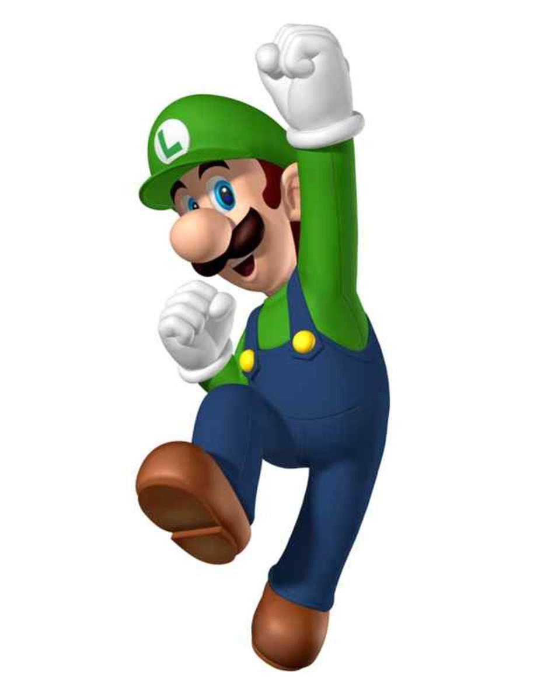

Luigi
Luigi is the younger twin brother of Mario. He first appeared in the 1983 arcade game Mario Bros and has since become one of Nintendo's most recognizable characters. Luigi is usually portrayed as taller and thinner than Mario, wearing his green hat and shirt with blue overalls, along with his signature "L" emblem on his cap. You may know his as thew shy and cautious compared to Mario's confident personality. Over the years, Luigi has become a fan favorite for his loyalty,humor and unqiue personality withing Mario Francise.
Princess Peach
Princess Peach is the ruler of the Mushroom Kingdom in the Mario seris and is known for her kindness,grace and leadership. Princess Peach is often kidnapped by Bowser, which leads Mario on his adventures to rescue her. She takes on an active hero role, using her own abilites and powers. She's typically recognized by her pink gown, blonde hair, crown and royal personality.

Bowser
Bowser is the main villian in the Mario series and the King of the Koopas.He often kidnaps Princess Peach in an attempt to take over the Mushroom Kingdom, but Mario usually stops him before Bowser plans to gain control or force her to marry him.